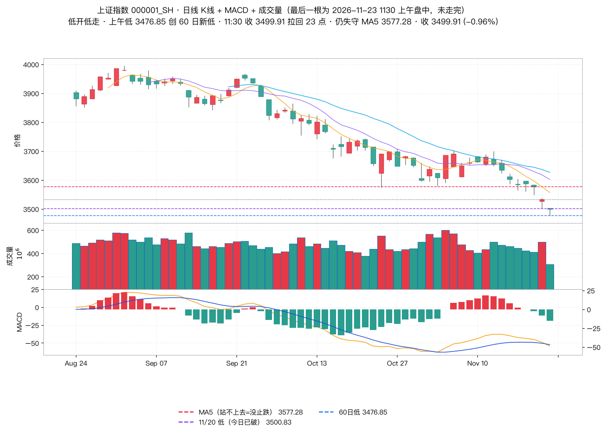
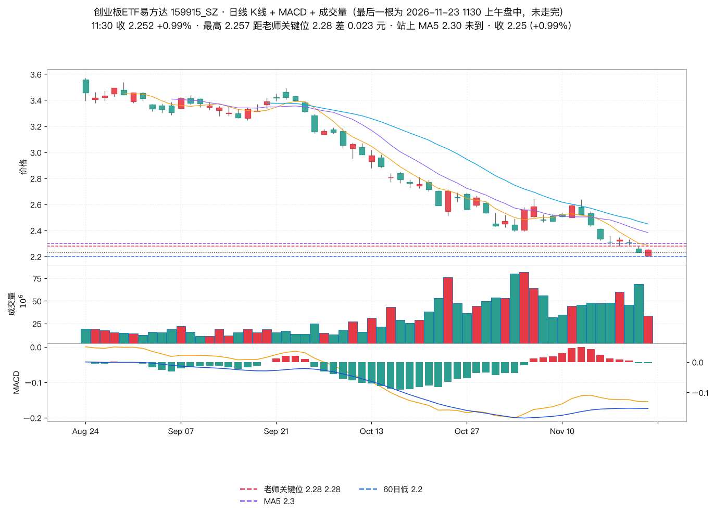
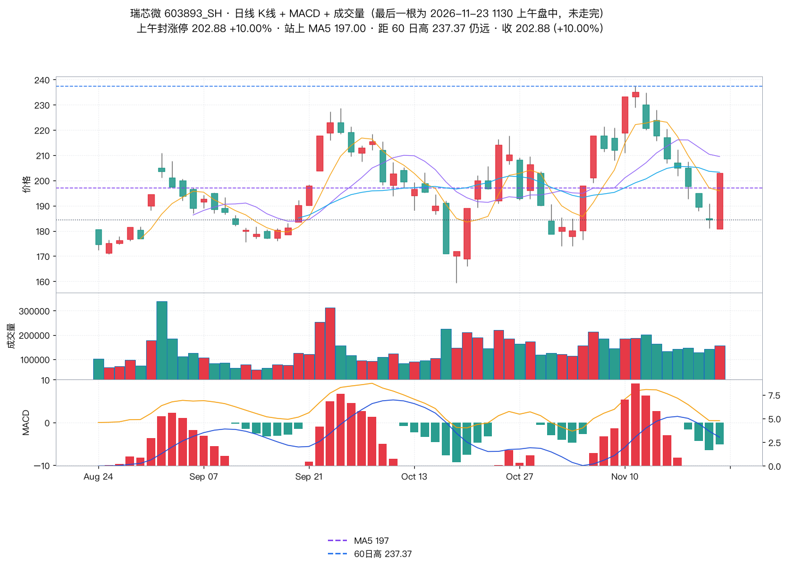
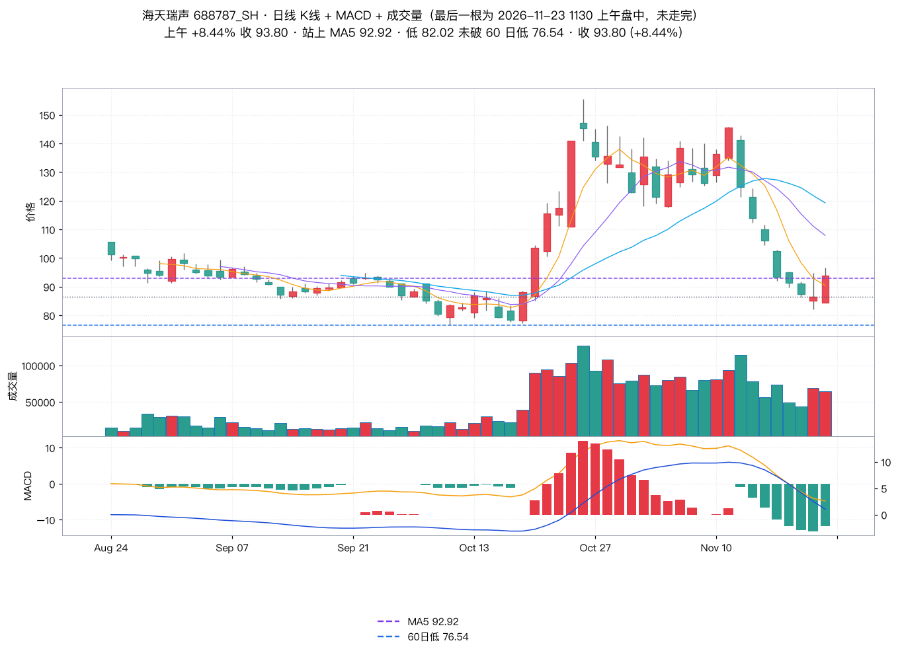
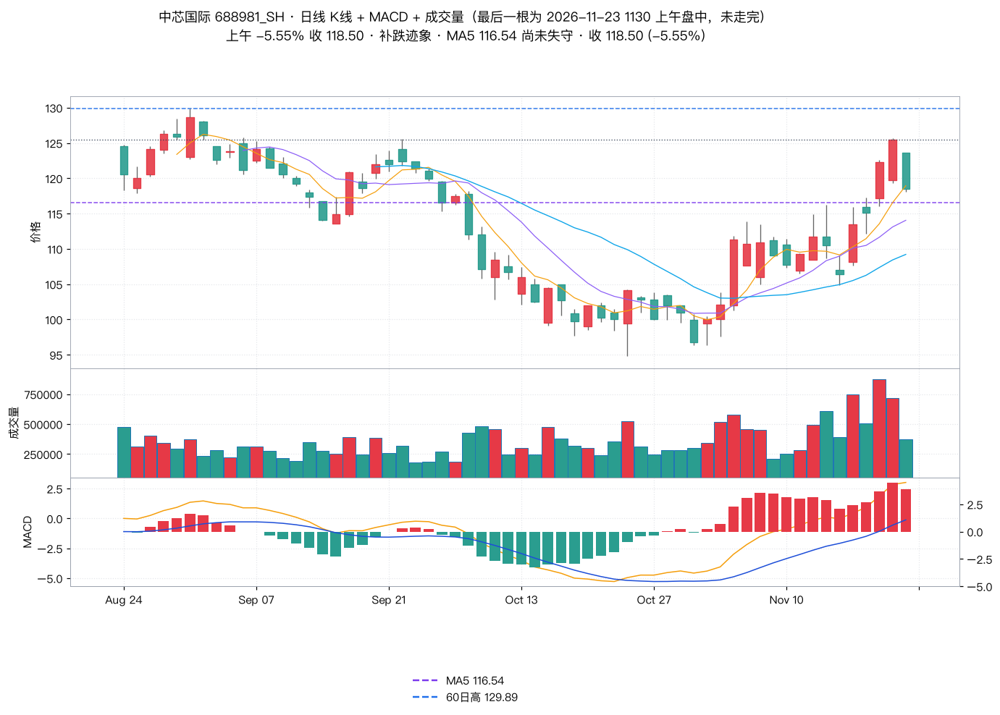
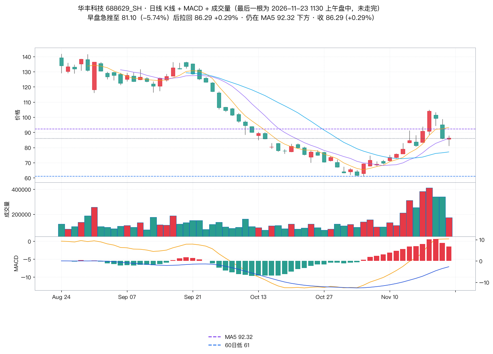
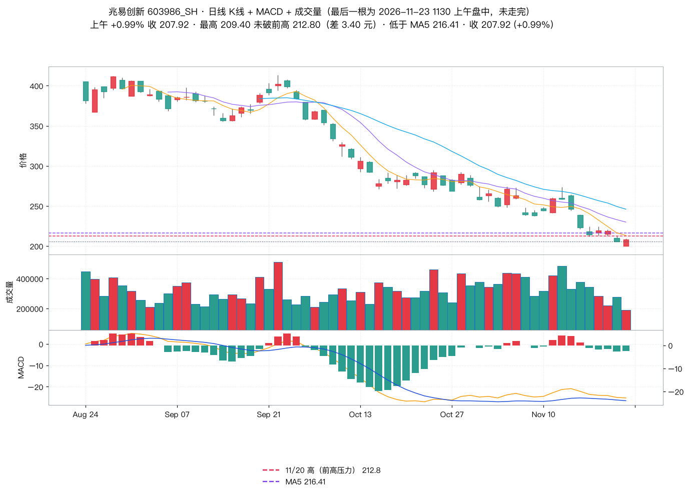
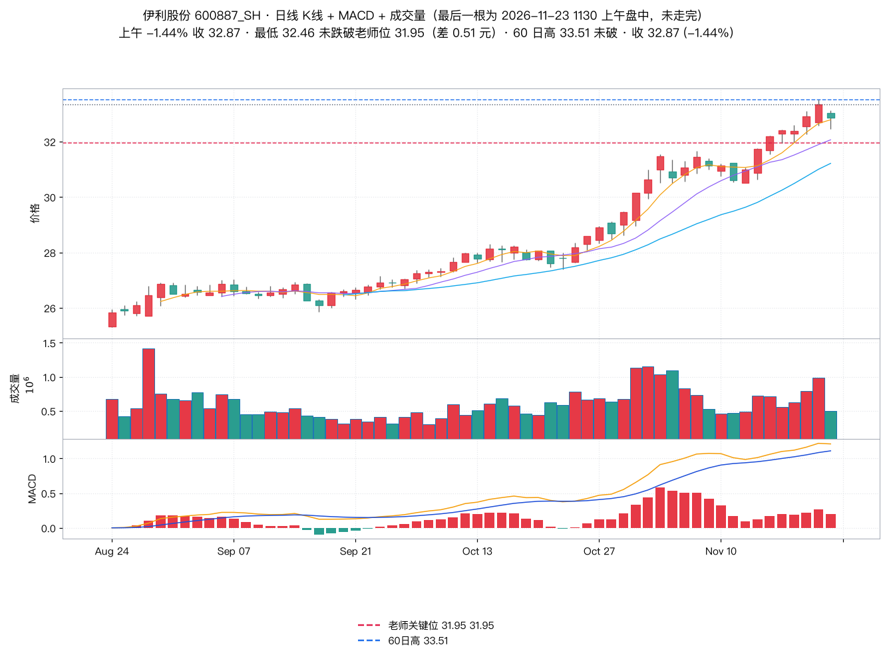
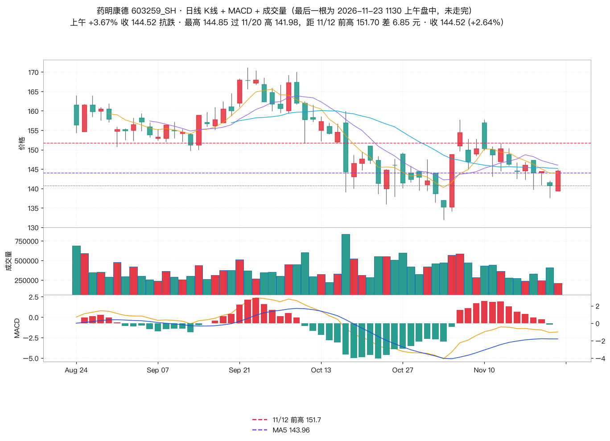
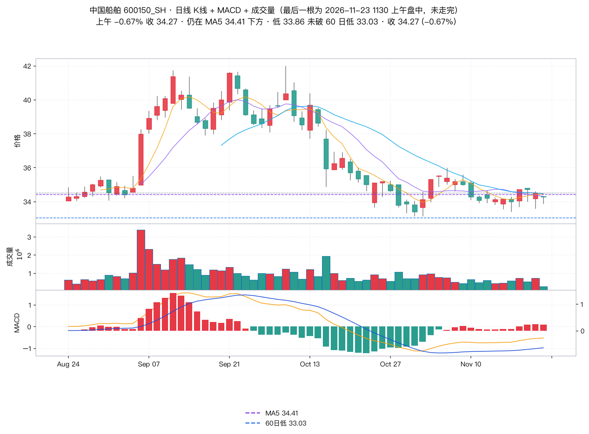

结论：指数进入背驰段但上午没止跌，底背驰随时可能出现——保持低仓位、耐心等日线有力度底分型，不追涨。 上证 11:30 收 3499.91（-0.96%），上午低 3476.85 破 11/20 低 3500.83 创 60 日新低，仍在 MA5 3577.28 下方；两市半日 9,164 亿、较昨同刻 +7.08%，放量有限 → 周末利好反应不大。国产算力 -3.38%（7 只全跌）确认补跌；算力/PCB +4.03%/+3.96%、传媒 +3.74%、人形机器人 +4.62% 是超跌反弹。池内 9 只全部无方法买点。
① 「低开震荡」 —— 上证开 3503.52（低开 -0.86%）→ 探 3476.85 → 11:30 收 3499.91（-0.96%），自低点回拉 23.06 点，收盘仍压在开盘下方；② 「上午震荡未止跌，仍在延续过程中」 —— 最低 3476.85 跌破 11/20 低 3500.83，创 60 日新低，收盘距 MA5 3577.28 差 77.37 点，止跌三要件（底分型、站 MA5、过第三根高点）一条都不满足 → 不能写止跌；③ 「成交量略有放大，但幅度并不明显，市场对政策反应不大」 —— 两市 11:30 成交 9,164 亿 vs 昨日同刻 8,558 亿（+7.08%），温和放量却指数创新低，与「反应不大」一致 ✓；④ 权重端弱、创业板反弹：创业板 +1.22%、深成 +0.24%、中证1000 +0.14%，而 上证 -0.96%、上证50 -1.21%、科创50 -2.66% —— 指数弱是沪市权重拖累，不是全面杀跌。

上证指数 · 最后一根为 2026-11-23 11:30 盘中（未走完）· 破 11/20 低，未站 MA5

创业板ETF易方达 · 11:30 收 2.252，最新价 2.257 距老师关键位 2.28 差 0.023 元
| 方向（自建篮子） | 老师口径 | 实测 · 11:30 |
|---|---|---|
| 国产算力 | 要防范补跌风险，上午走势确认在补跌，国产设备类居跌幅榜前列 | -3.38%（0 涨 7 跌，115 亿） 北方华创 -6.82%、拓维信息 -6.24%、常山北明 -5.03%、中芯国际 -5.55% |
| 算力/CPO | 半导体端、算力 AI 很活跃 | +4.03%（5 涨 0 跌，367 亿） 新易盛 +8.17%、中际旭创 +4.78%、工业富联 +0.89% |
| 元件/PCB | 同属算力 AI 链 | +3.96%（8 涨 0 跌，246 亿） 崇达技术 +10.00% 涨停、景旺电子 +5.62%、胜宏科技 +4.82% |
| 半导体 | 很活跃（老师口径） | -0.99%（2 涨 4 跌，245 亿） 瑞芯微 +10.00% 涨停、兆易创新 +0.99%；北方华创 -6.82%、寒武纪 -1.96% |
| AI视频/传媒 | 前期跌幅过大，只能视为超跌反弹 | +3.74%（7 涨 0 跌，49 亿） 上海电影 +10.01% 涨停、中文在线 +3.16%、掌阅科技 +4.63% |
| 人形机器人 | 超跌反弹，持续性要观察 | +4.62%（9 涨 0 跌，87 亿） 模塑科技 +7.17%、北特科技 +6.81%、拓普集团 +5.94% |
| 银行/红利 | 上证50 拉升后银行震荡甚至调整可能性偏高，用调整思路观察 | 银行 -0.79%（1 涨 4 跌）、高股息红利 -1.07% 上证50 上午 -1.21%，工行 -2.13%、建行 -1.88% |
① 「国产算力补跌确认」成立 —— 篮子 7 只全跌、平均 -3.38%，跌幅集中在国产设备/国产算力，与「周五提示要防补跌」一致 ✓；② 「超跌反弹不是止跌」成立 —— 传媒 +3.74%、机器人 +4.62% 全线红盘，但两者都还在各自 MA5 之下，属前期深跌后的修复，不构成买点 ✓；③ 「红利用调整思路观察」成立 —— 上证50 上午 -1.21%、银行 4 跌 1 涨，周五红利拉升已转入震荡调整；且 11/20 上证50ETF 份额暴增 44.86%（资金进、价弱 = 抄底被套）→ 防御端也要挑强势品种；④ 申万 L1 涨幅榜居首是传媒 +1.10%，机械设备 +0.51%、汽车 +0.50%，涨幅榜与「超跌反弹」结构吻合，新热点尚未成型。
| 标的 / 11:30 | 老师定性（老师口径） | 关键位 | 实测印证 | 动作 |
|---|---|---|---|---|
| 药明康德 603259 144.52 +2.64% | 抗跌，但无买点，需突破前高后出回抽确认 | 前高 151.70 MA5 143.96 | 最高 144.85 过 11/20 高 141.98；距 11/12 前高 151.70 差 6.85 元；收 144.52 站上 MA5 | 无买点 等 |
| 中国船舶 600150 34.27 -0.67% | 走势没止跌，不操作 | MA5 34.41 60日低 33.03 | 收 34.27 仍在 MA5 下 0.14 元；低 33.86 未破 60 日低 | 不操作 |
| 瑞芯微 603893 202.88 +10.00% 涨停 | 上午表现出色，但阳线不构成买点，等日线有力度底分型 + 2-3 天横向震荡 | MA5 197.00 | 封涨停并站上 MA5 197.00，但日线无有力度底分型，属超跌反弹 | 等 |
| 海天瑞声 688787 93.80 +8.44% | 同瑞芯微：潜力有，当前阳线不构成买点 | MA5 92.92 | 站上 MA5 92.92（+0.88 元）；低 82.02 未破 60 日低 76.54 | 等 |
| 伊利股份 600887 32.87 -1.44% | 前期一直逆势，今天震荡；跌破 31.95 = 顶背驰形成 | 31.95 60日高 33.51 | 低 32.46 未跌破 31.95（差 0.51 元）→ 顶背驰未成立；高 33.12 未破 60 日高 | 观察 |
| 创业板ETF 159915 2.252 +0.99% | 等日线有力度底分型或 15 分钟验证底分型，且站稳 2.28 后完成回抽确认 | 2.28 | 最高 2.257 距 2.28 差 0.023 元，未站稳 | 等 |
| 兆易创新 603986 207.92 +0.99% | 与创业板ETF 同思路：等底分型 + 突破前期压力位；压力没突破消化就稳健些 | 前高 212.80 MA5 216.41 | 最高 209.40 未破 11/20 高 212.80（差 3.40 元）；仍低于 MA5 | 等 |
| 华丰科技 688629 86.29 +0.29% | 1 分钟下跌中枢震荡，早晨向下没有底背驰，没止跌 | MA5 92.32 | 早盘急挫 81.10（-5.74%）后拉回，方向未止跌、无底分型 | 等 |
| 中芯国际 688981 118.50 -5.55% | 有补跌迹象，前面不建议追买；看补跌是仅今天还是持续 | MA5 116.54 | 上午 -5.55%，国产算力篮子内跌幅居前；MA5 116.54 尚未失守 | 等 |

瑞芯微 · 11:30 封涨停 202.88，站上 MA5 197.00，无有力度底分型

海天瑞声 · 11:30 收 93.80（+8.44%），刚站上 MA5 92.92

中芯国际 · 11:30 收 118.50（-5.55%），补跌迹象，MA5 116.54 未失守

华丰科技 · 早盘低 81.10 后拉回 86.29，仍在 MA5 92.32 之下

兆易创新 · 最高 209.40 未破前高 212.80，仍低于 MA5 216.41

伊利股份 · 低 32.46 未跌破 31.95，顶背驰未成立

药明康德 · 收 144.52 站上 MA5 143.96，距 11/12 前高 151.70 差 6.85 元

中国船舶 · 收 34.27 仍在 MA5 34.41 下方，未止跌
| 判据 | 实测 | 判定 |
|---|---|---|
| 国产算力「居跌幅榜前列」 | 东财行业榜数据源本时段限流，取不到「榜」；自建篮子 7 只全跌 -3.38%、申万电子整体 +0.41%（被元件/PCB +3.96% 拉动） | 口径差异 |
| 「半导体端、算力 AI 很活跃」 | 半导体篮子 -0.99%（2 涨 4 跌），强度集中在瑞芯微涨停、兆易创新 +0.99%；北方华创 -6.82%、寒武纪 -1.96% 仍弱 | 部分成立 |
| 「板块上一、二类热点榜」 | 本机无热点榜数据源，无法核验；用申万 L1 涨幅榜（传媒 +1.10% 居首）+ 涨停 60 只替代，新热点未见成板块 | 无法核验 |
| 底背驰 / 有力度底分型 / 1 分钟中枢 | 日线级数据无法复算结构，全部按老师口径引用，未声称我方验证 | 无法核验 |
当日一致 ✓：国产算力补跌确认、传媒与机器人属超跌反弹、瑞芯微涨停、海天瑞声大幅上涨、伊利股份未跌破 31.95、159915 未站稳 2.28、量能温和放大（+7.08%）、市场反应不大、9 只标的无方法买点。
点位：腾讯「5 日分时」11:30 切片（沪市 sh000001 / 深市 sz399106 为两市成交额口径，与昨日同一时点比）；涨跌家数与跌超 5% 家数：新浪 11:30 全市场快照 5,219 只（不含北交所）；涨停/跌停家数：东财涨跌停池；篮子为自建成分均值；MA5/60 日高低取 Tushare 前复权日线（最新完整日线为 2026-11-20）。
缠论定性（背驰、底分型、中枢）按老师口径引用，我方未复算，也不作为买点依据。
来源：都业华《高级班》2026-11-23 午评（午盘），执业编号 A0400626100004。以上内容仅供参考，不作为买卖依据，据此操作风险自担。投资有风险，入市需谨慎。
本报告为数据核验稿，不含任何买卖建议；老师观点归属老师，判断与措辞以原文为准。